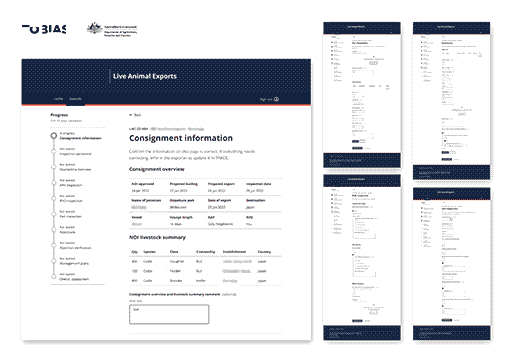
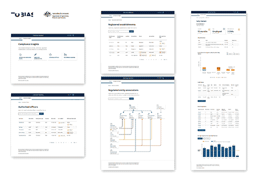
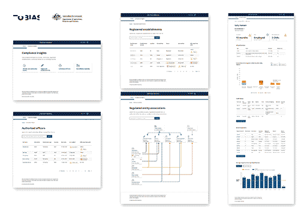

T2-24 initiative Export Service Onboarding team, focusing on digital transformation of export clearance systems into the export service.
User Interface & User Experience design on multiple prototypes
Usability testing of prototypes
User Experience design mapping user flows and touch points

Compliance Oversight team, focusing on digital transformation in Live Animals Exports, Plant Exports and Meat Exports commodity areas. Design Award Winner for Service Design 2023
User Interface & User Experience design on multiple prototypes
Usability testing of prototypes
User research and explorative workshop sessions
Synthesis and analysis of research data
Creation of visual artefacts, service blueprints, infographics, illustrations


 
